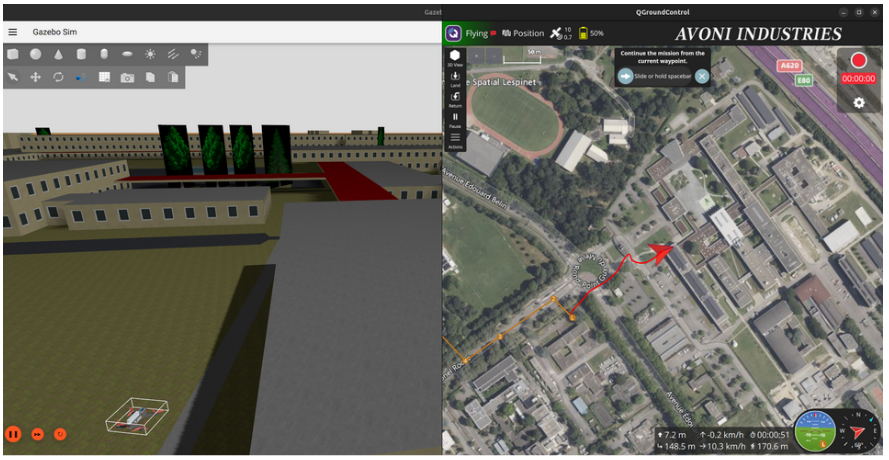
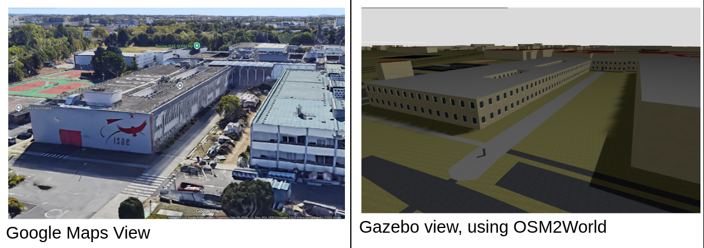
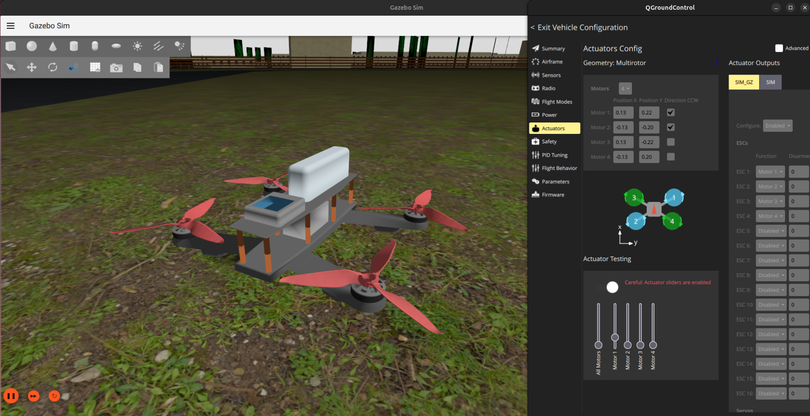

First UAV Build:
SITL Simulation
Setting up custom PX4 Software-In-The-Loop with Gazebo and QGroundControl!

The SITL simulation environment in action — Gazebo (left) rendering the drone flying over a simulated ISAE-Supaero / ENAC campus,
with QGroundControl (right) acting as the ground station. The custom world and drone model were both built specifically for this project.
Why Start with Simulation?
With the hardware build complete, the temptation is to plug everything in and fly. The smarter move is to first understand how the autopilot software works before trusting it with real hardware. PX4 supports a full Software-In-The-Loop (SITL) mode: the autopilot stack runs natively on your computer, connected to a physics simulator (Gazebo), while QGroundControl acts as the ground station exactly as it would in a real flight. No risk to the hardware, and a much faster iteration cycle for learning the software.
The Software Stack
The simulation environment is built around three tools that interact with each other:
- PX4 SITL: the autopilot firmware compiled to run on the host computer. It handles all flight control logic, state estimation, and mission execution.
- Gazebo: the physics and rendering simulator. It models drone dynamics, applies perturbations, and provides visual feedback of the flight.
- QGroundControl (QGC): the ground control station. Used for parameter tuning, mission planning, telemetry monitoring, and flight mode management — identical workflow to real operations.
Customizations: Making It Feel Real
Rather than just running the default Gazebo world with a generic quadrotor model, the simulation was customised in two significant ways. The goal was to go deeper into how the software works internally — not just run it as a black box.
Custom Simulation World: ISAE-Supaero / ENAC Campus
The default Gazebo worlds are generic and disconnected from reality. To give the simulation concrete spatial meaning, a 3D model of the ISAE-Supaero / ENAC area in Toulouse was generated from OpenStreetMap data using OSM2World, then imported into Gazebo as a custom world. Flying over a place I know makes distance and scale immediately interpretable — it converts simulation results into something that translates to real life.

Side-by-side comparison of the ISAE-Supaero campus — Google Maps satellite view versus the OSM2World-generated 3D model used in Gazebo.
Custom Drone Model: QAV250 in Gazebo
The second customisation was replacing the default quadrotor model with one that matches the actual QAV250 build — correct geometry, mass properties, and motor layout. This required editing the SDF model definition and understanding where PX4 and Gazebo exchange vehicle parameters. It also served as a useful exercise in understanding how simulation fidelity is controlled and where the key configuration files live in the PX4 and Gazebo source trees.

The custom QAV250 drone model imported into Gazebo — inertial properties and geometry tuned to match the real build.
RC Controller as Joystick Input
The real RC transmitter was also configured as a joystick input for SITL — meaning manual flight modes in simulation were flown with the same hardware that would be used in real life.
What Was Tested
With the environment set up, several aspects of PX4 were explored:
- Pre-planned autonomous missions: missions were defined in QGroundControl, uploaded to the simulated drone, and executed — including takeoff, waypoint navigation, and landing. Watching the drone fly the planned route over the virtual campus was a satisfying moment.
- Flight modes: the various PX4 flight modes (Manual, Stabilized, Altitude, Position, Mission) were tested and compared to understand what the autopilot is actually doing in each case.
- Simulated onboard camera: a camera plugin was added to the Gazebo model and the video feed was streamed to QGroundControl — a first look at the onboard camera workflow that would be relevant for future autonomous tasks.
- MAVSDK: some time was spent experimenting with MAVSDK (the PX4 SDK for offboard control via Python/C++) to understand how programmatic control of the vehicle works beyond what QGC provides natively.
Issues Encountered
Building a PX4 SITL stack from scratch on Ubuntu is rarely a "plug-and-play" experience. The following challenges required targeted debugging to resolve:
- Environment Dependencies: Numerous library conflicts and missing host system packages required manual identification and installation to complete the build.
- Version Incompatibility: The PX4, Gazebo, and ROS ecosystems require precise version matching to ensure the plugin architecture functions correctly.
- Peripheral Mapping: QGroundControl often failed to automatically recognize the RC transmitter, necessitating manual calibration and custom joystick mapping (RadioMaster Pocket Crush comes without full USB support).
- Simulation Alignment: Discrepancies in coordinate systems, spawn positions, and physics parameters caused integration friction between the custom Gazebo world and the PX4 SITL.
- Source Management: Navigating the PX4 Git repository while managing forks, custom branches, and upstream merges added significant overhead to the development workflow.
- Geospatial Workflow: Developing a reliable, repeatable method for converting OSM data into functional Gazebo worlds required testing several inconsistent toolchains.
While none of these obstacles were insurmountable, they underscored a vital lesson: pin your dependency versions early and remain conservative regarding system updates.
Documentation
A full report covering the SITL setup, customisations, and experiments is in preparation.
Report: incoming.